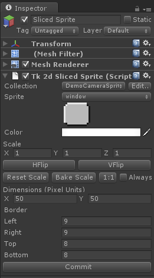
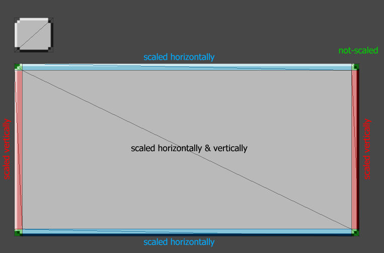

Documentation
Script Reference
Forum
Documentation
Script Reference
Forum

Dimensions (Pixel Units) - This is the dimensions of the sliced sprite in pixel units. Pixel units in this case are pixels in the source texture. So, if your sliced sprite source image is 8x8, then if the dimensions were set to 8x8, the size of the sprite would match the original sprite itself. A size of 16x16 would make it twice the size of the original sprite.
You can also use the scale parameter to uniformly scale the entire sliced sprite, much like how transform.scale works.
Border - This it the number of pixels which marks the edge border.
When a sliced sprite is scaled, only the middle sections of the sprite are affected, as illustrated below.
